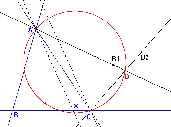
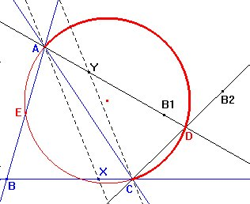

|
Sea ABC un triángulo cualquiera. Con un punto D se obtiene un cuadrilátero ABCD. Construir las bisectrices de los ángulos DAB y DCB. ¿Dónde colocar el punto D para que las bisectrices de DAB y DCB sean paralelas? Estudiar esta situación y justificar vuestras conjeturas. Esta actividad comienza por una exploración que puede ser beneficiosa con la ayuda de un logicial como Cabri-Géomètre. |
|
Clapponi, P. (1994): Activité ..
des bissectrices paralleles. Petit X 35
|

Situemos un punto cualquiera X sobre BC y pensemos en AX como la bisectriz del ángulo DAB. Entonces la recta AD será la recta simétrica de AB respecto de AX.
Ahora trazamos la paralela por C a AX, que deberá ser la bisectriz del ángulo DCB, por lo que la recta CD es la simétrica de CB respecto de esta paralela.
Entonces obtenemos el punto D como intersección de las rectas AD y CD.
Usando la herramienta Lugar geométrico de Cabri vemos que el lugar de D es una circunferencia que pasa por A y C.

Estudio de la situación y justificación de los resultados obtenidosObservemos la figura:
Por ser ÐBAX = ÐXAD = ÐCYD y ÐAXB =ÐYCB=ÐYCD los triángulos ABX e YDC son semejantes, resultando que ÐADB (= ÐABC) es constante, y D debe estar en el arco capaz de AC para para el ángulo B.